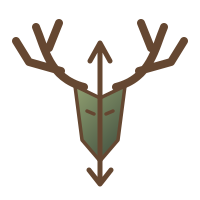
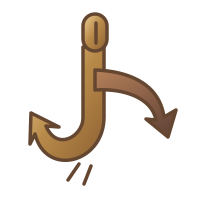
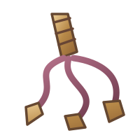
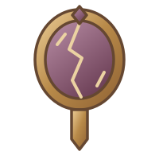

Infernalischer Gott
Dagon
Der Usurpator
Dominanz, Rebellion, Stolz und infernales Feuer.
Archivblatt öffnenDie Zehn Infernalen und die Mächte ihres Umkreises
Die Zehn Infernalen, fünf Untergötter, infernale Geweihte und Gefallene – ihre Wesenheiten, Domänen, Pakte und Hinterlassenschaften.
Den infernalen Kreis erkunden
Die Überlieferungen verbinden die Infernalen mit dem Großen Spalt, mit göttlichen Gegenbildern und mit den Begierden der Sterblichen. Ihre Ziele und Formen der Verehrung unterscheiden sich: Herrschaft, Rache und Verderbnis stehen neben Jagd, verborgenem Wissen und widersprüchlichen Mythen. Eine gemeinsame Rangordnung nach dem Vorbild der Alerischen Kirche lässt sich daraus nicht ableiten.
Zehn Namen stehen unter den hohen Mächten dieses Registers. Adar nimmt dabei eine Sonderstellung ein: Seine Überlieferung bestreitet eine eindeutige Zugehörigkeit zu den Infernalen. Die Gefallenen bilden eine eigene Gruppe; Zarakhul ist in seinen Splittern gebannt, Balor nach seinem Fall wieder mit Dagon vereint. Beide vergeben gegenwärtig keine eigenen Pakte.
Namen, Wesen und Überlieferungen
Öffnet ein Götterblatt oder sucht nach einem Namen, Beinamen oder einer Domäne.
Die Zehn Infernalen
Zehn Namen im infernalen Register – von Dagons Herrschaftsanspruch bis zu Adars rätselhafter Sonderstellung.
Infernalischer Gott
Der Usurpator
Dominanz, Rebellion, Stolz und infernales Feuer.
Archivblatt öffnenInfernale Göttin
Die Witwe
Magie, Zwielicht, Schicksal und die Geheimnisse des Kosmos.
Archivblatt öffnen
Infernalischer Gott
Der Plünderer
Die entfesselte Wildheit des Krieges: Zorn, Zügellosigkeit und die Herrschaft des Stärkeren.
Archivblatt öffnen
Infernalischer Gott
Der Schänder
Entweihung, Unterwerfung, Blut- und Seelenmagie.
Archivblatt öffnen
Infernalischer Gott
Der Jäger
Jagd, Sportsgeist und die wilden Gestalten der Tiermenschen.
Archivblatt öffnen
Infernalischer Gott
Der Hedonist
Maßloser Genuss, Verführung und die Ausschweifungen der Schwelgerei.
Archivblatt öffnen
Infernale Göttin
Die Nachtmaid
Nacht, Schatten, verborgene Pfade und das ungewisse Glück der Dunkelheit.
Archivblatt öffnenKosmische Entität
Der Ketzer
Eine rätselhafte Macht außerhalb eindeutiger Einordnung, verbunden mit Zweifel, Rebellion und dem Großen Spalt.
Archivblatt öffnen
Infernalischer Gott
Der Intrigant
Wissen, Schicksal, Sterne und Hoffnung als Werkzeuge verborgener Absichten.
Archivblatt öffnen
Infernale Göttin
Die Schicksalsweberin
Tod, Zerfall, Leere und die unausweichliche Vergänglichkeit.
Archivblatt öffnenDie infernalen Untergötter
Tiefe, Rache, Zerrissenheit, Verlockung und Verderbnis erhalten eigene Gestalten.

Infernale Untergottheit
Der Verschlinger
Das Grauen der Meerestiefen, der Ertrunkenen und verlorenen Seelen.
Archivblatt öffnenInfernale Untergottheit
Die Rächerin
Rache, Eifersucht und Hinterlist als düsteres Erbe des Hedonisten und der Nachtmaid.
Archivblatt öffnenInfernale Untergottheit
Der Zweigesichtige
Aroths zerrissene Persönlichkeit zwischen entfesselter Freude und tiefer Verzweiflung.
Archivblatt öffnen
Infernale Untergottheit
Der Trickser
Wünsche, Sehnsucht und Vereinbarungen, deren Preis die eigene Seele sein kann.
Archivblatt öffnen
Infernale Untergottheit
Der Verseucher
Seuchen, Pestilenz und Verderbnis im Gefolge Helas.
Archivblatt öffnenInfernale Geweihte
Arkeon und Asphyra sind mit Namen, Beinamen und Bildnissen überliefert.

Infernaler Geweihter
Der Häscher
Name und Beiname sind im Register bewahrt. Eine Einzelüberlieferung liegt noch nicht vor.
Bildnis ansehen
Infernaler Geweihter
Die Peinigerin
Name und Beiname sind im Register bewahrt. Eine Einzelüberlieferung liegt noch nicht vor.
Bildnis ansehenDie Gefallenen
Gefallene Mächte und ihre Hinterlassenschaften; die ausführlichen Überlieferungen Zarakhuls und Balors stehen neben den noch unvollständigen Namen.
Gefallener
Sein Beiname und Bildnis sind überliefert. Der persönliche Name ist bislang unbekannt.
Bildnis ansehen
Gefallener
Sein Beiname und Bildnis sind überliefert. Der persönliche Name ist bislang unbekannt.
Bildnis ansehenGefallener
Der Verschwörer
Name und Beiname sind im Register bewahrt. Eine Einzelüberlieferung liegt noch nicht vor.
Bildnis ansehenGefallener Gott
Der Tyrann
Ein gefallener Gottkönig, dessen gebannte Essenz in den Neun Splittern fortbesteht.
Archivblatt öffnen
Gefallener Dämonenfürst
Der Auslöscher
Dagons einstiger Dämonenfürst, Ursprung der Feuerzyklopen und nach seinem Fall wieder mit Dagon vereint.
Archivblatt öffnenZu dieser Suche wurde kein Eintrag gefunden. Versucht einen anderen Namen oder öffnet wieder alle Kapitel.
Weiterführende Überlieferungen
Das Buch der infernalen Sphärenkunde im Bestiarium.